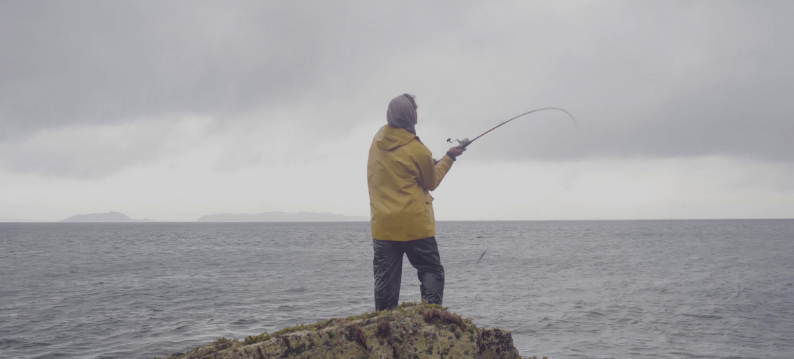
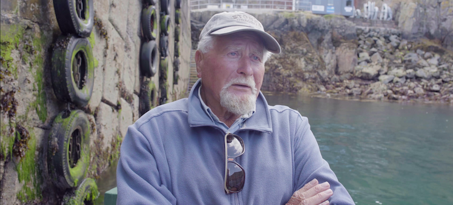
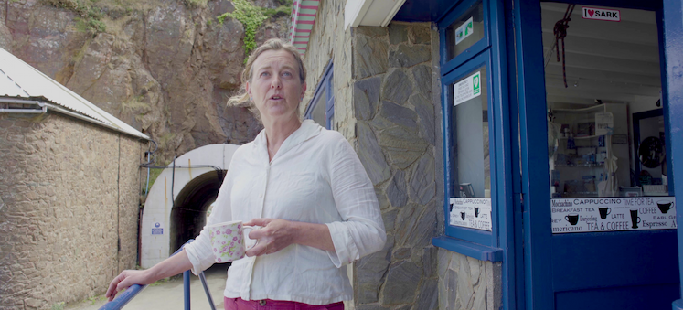
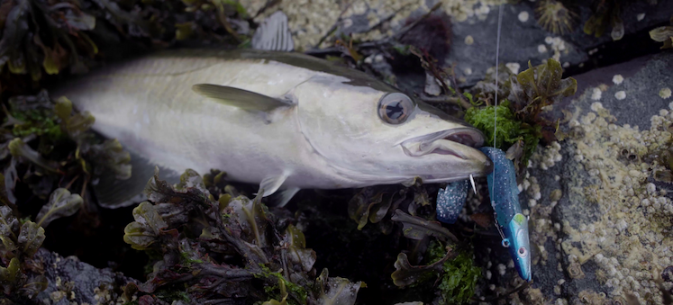
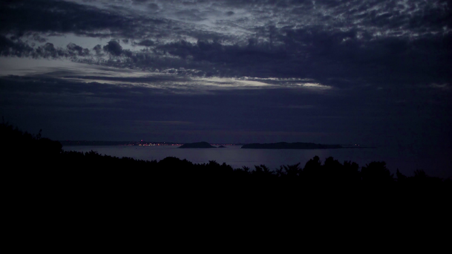

8mins, 2019
The island of Sark is a place where the past and future collide. The last feudal state in Europe, rooted in ancient history, attracting people for reasons ancient — escape, nature, and modern — low tax seeking digital nomads, anti-tech back-to-the-land types, and techno-libertarian self determining idealists. One thing is true, it is never quite the paradise or utopia that is imagined, but something else.
Developed as part of LisbonDocs 2019
WR SAUNDERS + HIGH ALTITUDE FILMS 2019